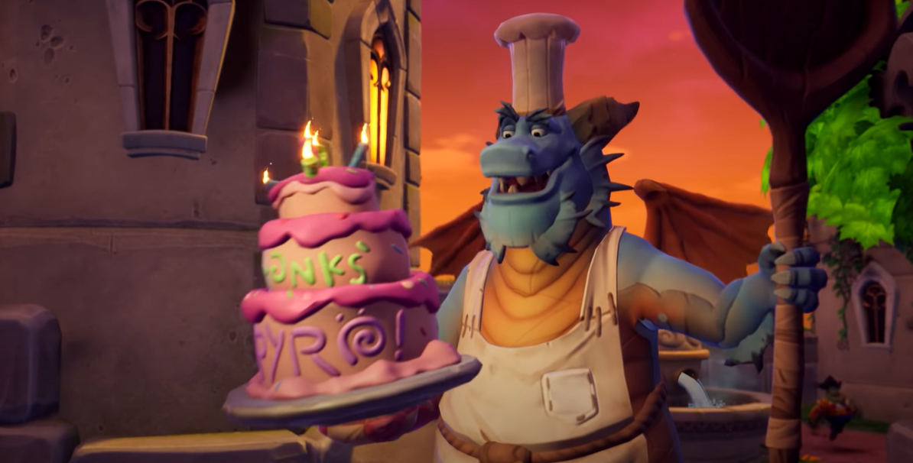
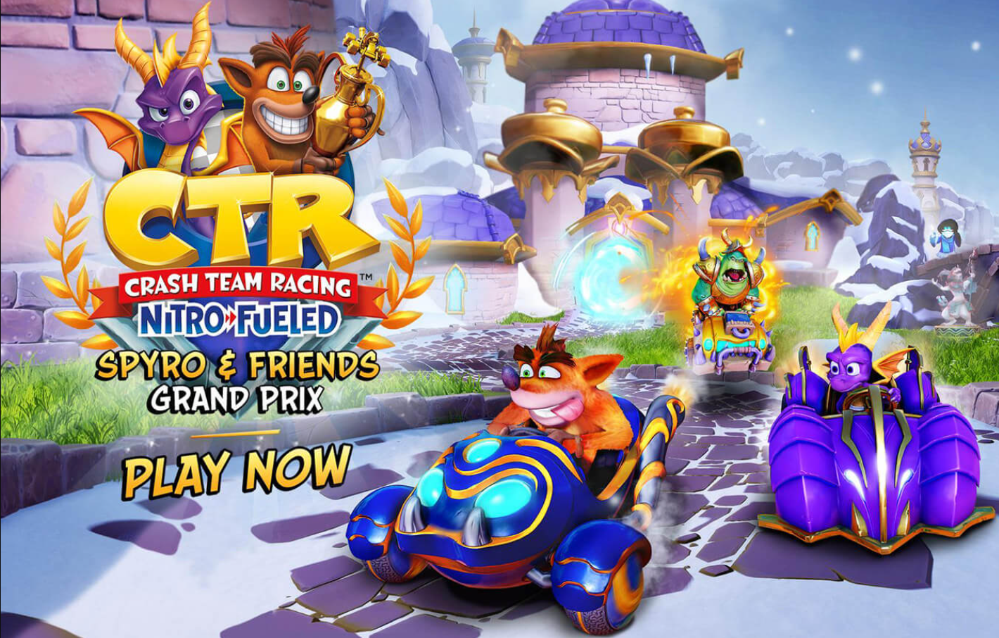
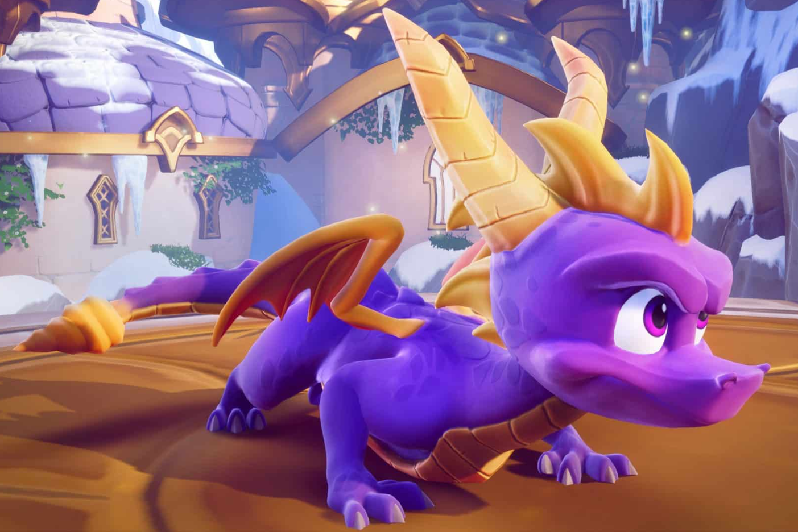

Viimeisimmät yhdistystämme ja Spyroa koskevat uutiset löytyy täältä.

21.1.2022 Spyro-fanit 5 vuotta!
Vuonna 2017 perustettu yhdistyksemme täyttää tänään 5 vuotta! Tervetuloa juhlimaan yhdistyksemme tiloihin!

30.8.2019 Hanaa, Spyro!
Monien toive toteutui ja Spyro on mukana Crash Team Racing: Nitro-Fueled -pelissä. Myös Hunter ja Gnasty Gnorc ovat menossa mukana. Kuvassa Spyro ja Gnasty Gnorc yrittävät haastaa Crash Bandicootin.

13.11.2018 Spyro Reignited Trilogy julkaistu!
Spyroa pystyy vihdoin pelaamaan myös Playstation 4:llä ja Xbox Onella!